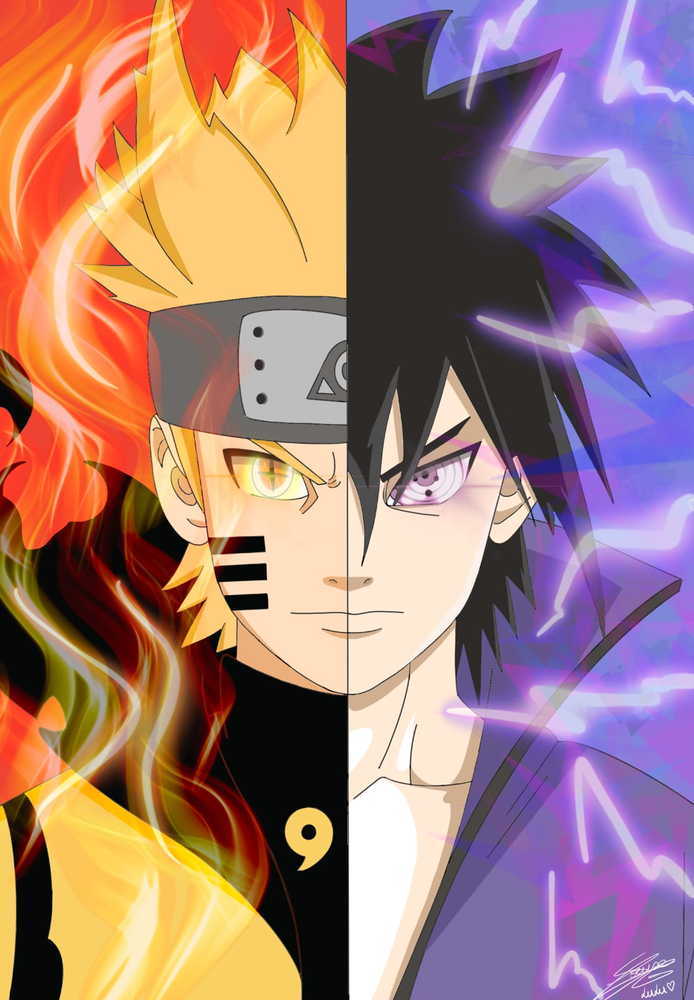
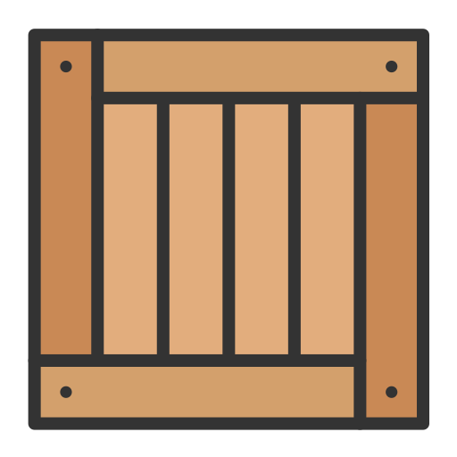

Welcome to "Catching game"
Instructions
In this game you will use your mouse to move the basket and catch
ramen.
There are 3 levels and each level will have ramen fall faster.
Rules are simple, catch ramen and reveal the part of the image that's
hidden and go to the next level.
If one ramen falles next to the basket you are good, but if the second
one falls its Game Over.
Try catching them all and reveal the image. GOOD LUCK!

Score: 0